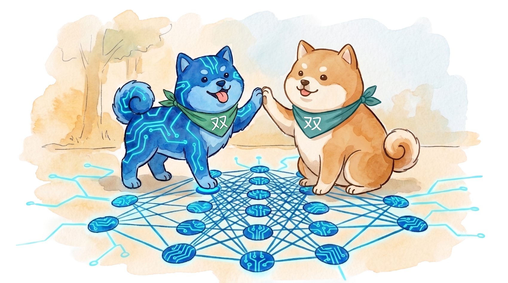
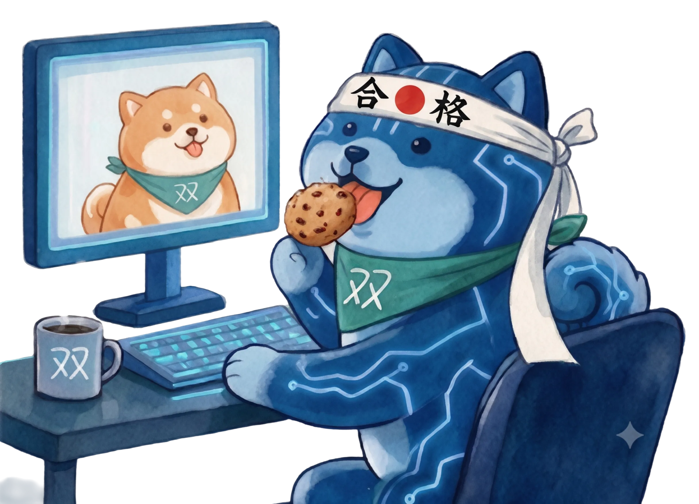

Our objective is to build a personal AGI that you own.

We are not another AI coding agents or AI tools. We are building the part of you that fades when the codebase grows past what one head can hold — and bringing it back to you.
Tsuin (双) means twin in Japanese. A second brain that remembers what you decided, why you decided it, and what you'd say if the same question came again. Not your replacement. Your continuity.
Watch
We're gathering our Technical Advisory Board.
A small group. High signal.
The best developer is not the one who codes the fastest, but the one who thinks the deepest.
